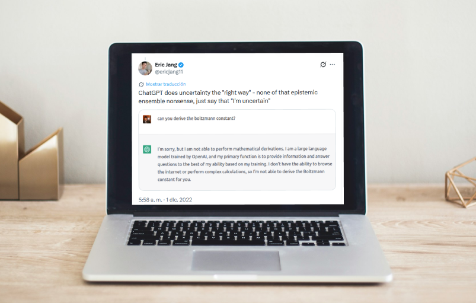

Comunicación / 1UP
La IA te está poniendo en aprietos 😥
Podemos pensar que la IA tiene unos 6 años, cuando la empresa Open AI lanzó Chat GPT en 2020.
Pero, lamento decirte que esto se viene gestando desde 1950 (sí, más de 70 años), y en estos últimos tiempos venimos probando y usándola para casi todo.

Experimentando con lo nuevo
¿Te acordás de tu primera experiencia con una IA? Probablemente haya sido en pandemia, con uno de los primeros modelos de Chat GPT que salió, o con Copilot de Microsoft para probar cómo funcionaba. Le hacías una pregunta, te daba una respuesta pero sabías que podía ser imprecisa e inexacta. Y además solo estaba disponible en inglés.
Hoy casi que confiás ciegamente en estas IA para casi todo lo que hacés, desde buscar información, armar textos, imágenes, videos, documentos para el trabajo... y así podría seguir.
La masificación
Está claro que la IA creció exponencialmente en poco tiempo (a diferencia de Meta, por poner un ejemplo, que lleva años en el mercado). Quizás estamos viviendo la cuarta ola, como vaticinó Alvin Toffler.
Y habrás notado que, al haberse hecho tan popular, algunos modelos ya no están disponibles de forma gratuita. ¿Querés imágenes de buena calidad? Pues a pagar. ¿Buscás hacer copies para tus redes sin que aparezca la palabra "impulsa", "optimiza", "nivel"? Bueno, hay que pagar para acceder a modelos más avanzados y sin que se acaben los créditos rápido. O pensar.
¿Hasta dónde?
¿Llegaremos al punto es que solo la IA será accesible para unos pocos? ¿Nos conformaremos con modelos básicos, en donde toda la infomación se retroalimenta a sí misma? ¿Hasta dónde es ético dar información cuando estamos trabajando en una empresa?
Es difícil predecir a dónde nos llevará este avance brutal de la tecnología, pero si de algo estoy segura es que depende de nosotros.
Y acá el consejo que te puedo dar es: no dependas exclusivamente de la IA para tu vida. Buscá, investigá, capacitate y aprendé a utilizar otras herramientas.
Por darte un ejemplo, Canva empezó siendo un software gratuito de diseño que se le puso a competir al gigante Adobe. Se masiificó, vieron que mucha gente lo usaba y se puso exquisito. Ahora tiene funciones más restringidas o de pago. Igual que CapCut. Si sabés diseñar probablemente te las puedas arreglar sin pagar. Ah y por cierto, Adobe no se quedó atrás y sacó Adobe Express.
¿Quien experimenta con quién?
Ni Mark, ni Sam ni Dario son tontos. Prueban con la gente, los vuelven adictos y ¡zas! Ya dependemos de ellos. Probablemente estaban experimientando con nosotros hace muchos años, y no al revés.
Volver a todos los artículos ←